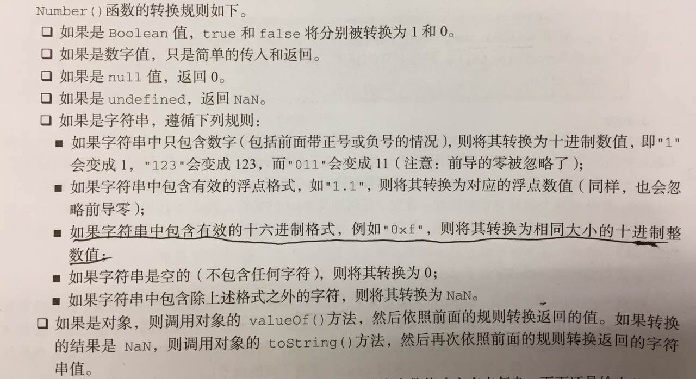
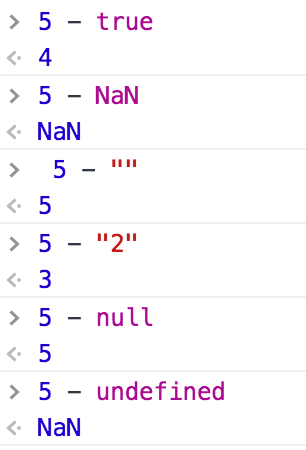
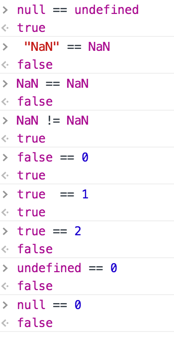

ECMAScript中的数据类型
- 基本数据类型：Undefined, Null, Boolean, Number, String 保存在栈内存中
复杂数据类型：Object 保存在堆内存中， 在栈内存中保存了一个指向实现位置的指针
- typeof用于判断数据类型， 可能的值有： “undefined”, “boolean”, “string”. “number”, “object”(如果这个值是对象或null, 因为null表示一个空的对象引用), “function”
- “undefined”值派生自”null”值，因此 null == undefined // true
ECMAScript不支持任何创建自定义类型的机制，所有的值最终都将是上述6种数据类型之一
Undefined类型
- 只有一个值： undefined
- 变量声明之后默认取得undefined值
- 尚未声明的变量只能执行一项操作：typeof //返回undefined
1 2 3 4 5 6
| var message; // var age; typeof message; // "undefined" typeof age; // "undefined" alert(message); // "undefined" alert(age); // ReferenceError: age is undefined
|
Null类型
- 只有一个值： null
- 表示空对象指针，typeof返回”object”
Boolean类型
- 只有两个字面值： true和false
- 其他类型转换成Boolean:
| 数据类型 |
转换为true的值 |
转换为false的值 |
| String |
任何非空字符串 |
“” |
| Number |
任何非零数字值（包括无穷大） |
0和NaN |
| Object |
任何对象 |
null |
| Undefined |
不适用 |
undefined（Undefined类型只能转换为false) |
Number类型
- ES6新增二进制表示法0b(0B)
- ES6中官方八进制形式为0o(0O), 老式的O开头八进制在strict模式下会报错（SyntaxError）
第六, 严格模式禁止八进制数字语法. ECMAScript并不包含八进制语法, 但所有的浏览器都支持这种以零(0)开头的八进制语法: 0644 === 420 还有 “\045” === “%”.在ECMAScript 6中支持为一个数字加”0o”的前缀来表示八进制数.
— MDN
- 浮点型数值需要的内存空间是整数值的两倍，最高精度是17位小数。
- 主义Number.POSITIVE_INFINIDY == Infinity，Number.NEGATIVE_INFINITY == -Infinity, Number.MAX_VALUE, Number.MIN_VALUE
NaN:
- 任何涉及NaN的操作都会返回NaN
- NaN与任何值都不相等，包括NaN本身
- isNaN()判断。基于对象调用该函数时，先调用对象的valueOf()方法，再确定该方法返回的的值是否可以转换为数值，如果不能，则基于这个返回值再调用toString()方法，再测试返回值。
1 2 3 4 5 6 7 8 9 10 11 12 13 14
| isNaN('blue') //true，不能被转换成数值 0/0 // NaN, 正数/0 // Infinity, 负数/0 // -Infinity Number("") // 0 Number("000011") // 11 parseInt("") // NaN parseInt("000011") // 11 parseInt("1234blue") // 1234 parseInt("0xA") // 10(十六进制) parseInt("070") // 70(不会被当成八进制),除非parseInt("070", 8); parseFloat("0xA") // 0 parseFloat("0908.5") // 908.5
|
数值转换

String类型
- 字符串拼接过程:
1 2
| var lang = "Java"; lang = lang + "Script";
|
首先创建一个能容纳10个字符的新字符串，然后在这个新字符串中填充”Java”和”Script”，最后一步是销毁原来的字符串。
- 数值，布尔值，对象，字符串值都有toString()方法，而null和undefined没有
- 转型函数String()可以把其他类型的值转换为字符串类型：有toString()方法就使用toString()方法的返回值，如果是null就返回”null”, 如果是undefined就返回”undefined”
Object类型
- 每个Object对象都有的属性和方法：
- constructor
- hasOwnProperty(propertyName)
- isPrototypeOf(obj)
- propertyIsEnumerable(propertyName)
- toLocaleString()
- toString()
- valueOf()：通常与toString()返回值相同
运算
加法
- 规则
- 如果有一个数是NaN，则结果是NaN
- Infinity + Infinity = Infinity
(-Infinity) + (-Infinity) = -Infinity
Infinity + (-Infinity) = NaN
(+0) + (+0) = +0
(-0) + (-0) = -0
(+0) + (-0) = +0
- 如果一个操作数是字符串，则将另一个数转换为字符串后拼接，转换规则同String()，即对象，数值，布尔值使用toString(), null和undefined使用String()变成”null”和”undefined”
减法
- 规则
- 如果有一个数是NaN，则返回NaN
- Infinity - Infinity = NaN
(-Infinity) - (-Infinity) = NaN
Infinity - (-Infinity) = Infinity
(-Infinity) - Infinity = -Infinity
(+0) - (+0) = +0
(+0) - (-0) = -0
(-0) - (-0) = +0
- 如果有一个数是字符串，布尔值，null或undefined，则先调用Number()再计算，如果转换后为NaN，则结果为NaN
- 如果有一个为对象，则调用对象的valueOf()，如果没有valueOf()方法就调用toString()方法并将返回值转换为数值

相等
- “==”
- 如果有一个数是布尔值，将其转换为数值
- 字符串+数值，字符串转换为数值
- 对象+其他， 调用对象的valueOf()后按照前两条规则

- “===”
- null === undefined // false